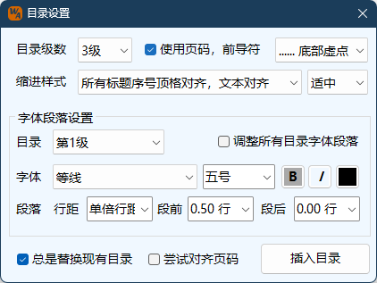

目录功能
Word Ribbon菜单格式助手中如下图所示部分可插入目录：
插入自动目录 此功能为Word本身自动目录功能的补充，单击按钮出现如下设置窗口：
目录级数 对应生成的目录要采用文档中大纲标题的级数，范围1至9级。
页码及前导符号 确定生成的目录是否包含页码，以及选择页码前导符的样式。
缩进样式 缩进调整起来费时费力，故本程序采用了固定的预设缩进样式，便于设置。 对于目录格式要求并非十分严格的情况下，可以直接选用一种类，如有特别要求，则需要通过Word设置界面调整。 可以通过程序提供的“适中、紧凑、宽松”三种状态控制标题编号与内容之间的缩进距离。
字体及段落设置 程序根据选择的目录级数，可以选择某一级目录设置其字体及段落相关参数。当希望可以一次性设置所有等级目录的字体及段落样式，则勾选调整所有目录字体段落选项。
替换现有目录 如果文档中已建立自动目录，则程序直接替换现有目录；如果文档中已有多个目录，则替换第一个目录。取消勾选时，程序仍然会提示是否替换，选择否则不替换，而在当前选择区域或者插入点位置插入新的目录。
尝试对齐页码 针对文档中存在不带编号的标题样式，例如附录、附表、附件之类的，未进行多级编号时，可能出现页码编号未对齐到页面右边距的情况。勾选此选项，程序将尝试对齐该类情况的页码，如果标题内存在较多制表符时，可能无法对齐。
注意：
1. 本程序生成目录为Word的目录域对象。且本程序目录仅对采用大纲级的标题类型生效（标题1至标题9），当文中标题为手动输入，大纲分级为正文时，目录将无法识别标题内容。
2. 本功能修改的是内置的目录样式即TOC样式，因此，文中存在多个目录时，任何修改将影响所有目录的样式，但显示级数不受影响。
3. 在调整目录的字体和段落样式时，选择调整所有目录时，需要有实际的调整操作才能生效。例如：一级目录字体大小为小四号，其余级均为五号，当前选择目录为一级时，显示的信息为一级目录的信息。此时勾选调整所有目录选项，但实际未进行任何调整操作，各级目录仍然是之前的设置。如果要将所有级目录的字体大小都设置为小四号，可以将字体大小选择改为其他非小四号，再改回小四号，这时其他级目录的字体均改为小四号。（说明：为何要改为其他非小四号再改回？因为当前选择小四号，如不改其他字号，再次选择小四号，对程序而言，选择未变化视为未操作，因此不会触发改动存储，但如果直接改为其他非小四号，则无此问题。）